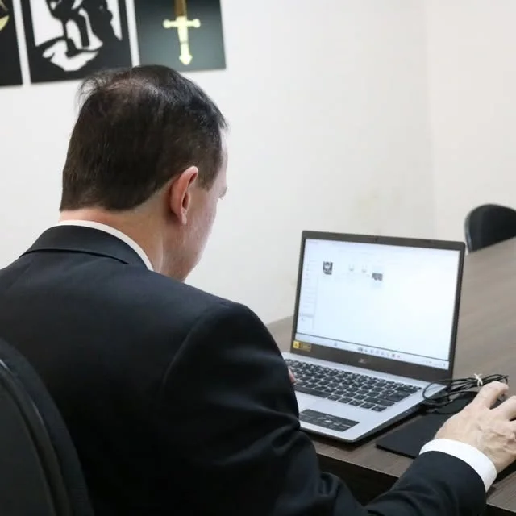

Qual é a sua situação?
Responda três perguntas. No fim, você vê quais documentos separar e manda o resumo direto pro WhatsApp do escritório.
Não precisa saber o nome do benefício. Escolha o que está acontecendo, do seu jeito. O Dr. Eduardo analisa o caso e explica o caminho.
As respostas não dizem se você tem direito: isso só a análise do seu caso mostra. Elas servem pra adiantar a conversa.
Listas de documentos a revisar com o Dr. Eduardo.
No que o escritório atua
Só direito previdenciário: tudo o que envolve o INSS.
Aposentadorias
Por idade, por tempo de contribuição, especial e da pessoa com deficiência. Inclui ver qual regra paga mais antes de pedir.
Afastamento e doença
Auxílio por incapacidade (o antigo auxílio-doença), aposentadoria por invalidez e auxílio-acidente.
Pensão por morte
Para a família de quem contribuía ou já era aposentado.
Revisões
Para quem já recebe e desconfia que o valor está errado, ou que ficou tempo de trabalho de fora.
Pedido negado
Quando o INSS nega ou corta o benefício: recurso e ação na Justiça.
Planejamento
Conferir o CNIS, corrigir vínculos e contribuições e saber quando vale a pena pedir.
Apareceu “aposentadoria disponível” no Meu INSS? Espere um pouco.
Pedir na hora pode fechar a porta pra uma regra que paga mais. Antes de clicar:
- Baixe o extrato do CNIS no Meu INSS e confira se todos os empregos estão lá.
- Veja se há contribuições abaixo do mínimo ou períodos faltando.
- Compare as regras que valem pro seu caso antes de escolher.
O Dr. Eduardo explica
Vídeos curtos sobre as dúvidas mais comuns do INSS. Escolha um assunto.
Dúvidas comuns
Respostas curtas, tiradas dos vídeos do Dr. Eduardo. Cada caso tem detalhes: na dúvida, pergunte.
Textos a aprovar pelo Dr. Eduardo.
Existe doença que garante aposentadoria por invalidez?
Não automaticamente. O que conta não é o nome da doença, e sim se ela impede você de trabalhar. Isso é avaliado com laudos, exames e a perícia do INSS.
Apareceu uma aposentadoria disponível no Meu INSS. Peço logo?
Vale analisar antes. Às vezes existe uma regra que paga mais, e um pedido feito às pressas pode impedir de usar a regra melhor.
Por que conferir o CNIS antes de pedir?
O CNIS é o registro de tudo o que você trabalhou e contribuiu. Emprego que não aparece e contribuição abaixo do mínimo mudam o valor do benefício. Dá pra corrigir antes de pedir.
O tempo em que fiquei afastado conta para a aposentadoria?
Em muitos casos, sim. O STJ decidiu (Tema 998) que o período em auxílio-doença pode contar na aposentadoria especial.
Dona de casa pode receber benefício por incapacidade?
Pode, em alguns casos. Há decisões da Justiça reconhecendo esse direito para quem contribui como dona de casa. É preciso ver as contribuições e a situação de saúde.
Quem está desempregado pode contribuir para o INSS?
Pode. E quem não tem atividade remunerada e está inscrito no CadÚnico pode pagar só 5% do salário mínimo, se cumprir as regras.

Um escritório só de previdenciário
O Dr. Eduardo da Silva Chimenes atende em Cravinhos, na Av. Pedro Duarte Amoroso. O escritório trabalha só com o INSS: aposentadorias, auxílios, pensões e revisões.
Toda semana ele grava um vídeo explicando uma regra do INSS em palavras simples. O mesmo cuidado vale no atendimento: você entende o que está sendo pedido e por quê.
Tempo de atuação e OAB a confirmar.
Fale com o escritório
Telefone fixo
(16) 3951-4754Horário
Segunda a sexta, até 17h